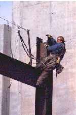
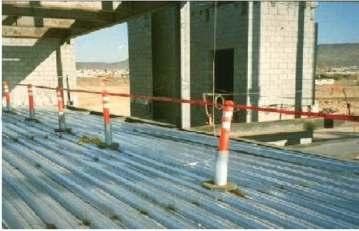
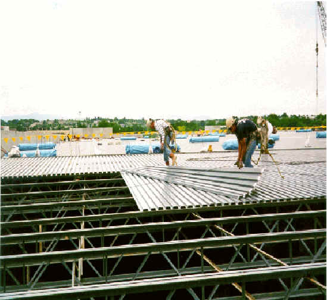
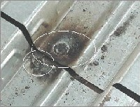

In steel erection, a new, very narrow working surface is constantly being created as skeletal steel
is erected at various heights. For many steel erectors, especially connectors, the work starts at
the top level of the structure. This means that anchor points above foot level are often limited or
unavailable. The special circumstances of steel erection can make conventional fall protection very
difficult to deploy below 15 feet. For this reason, the following requirements and exceptions in the
the steel erection fall protection standard have been made. [29 CFR 1926.760]
NOTE: Except where indicated, the same basic scaffold requirements that appear in this module also apply
to single-point adjustable, multi-point adjustable, catenary, interior hung, needle-beam, multi-level,
and float (ship) scaffolds.


- A CDZ can be established as a substitute for fall protection where metal decking is initially being installed and forms the leading edge of a work area over 15 and up to 30 feet above a lower level. [29 CFR 1926.760(c)]
- Leading-edge workers in a CDZ are required to:
- Be protected from fall hazards above 2 stories or 30 feet (whichever is less). [29 CFR 1926.760(c)(1)]
- Have completed CDZ training in accordance with 29 CFR 1926.761. [29 CFR 1926.760(c)(4)]
- Employees who are not engaged in leading-edge work and properly trained in the hazards involved are prohibited from entering the CDZ. [29 CFR 1926.760(c)(2) and 29 CFR 1926.760(c)(4)]
- The CDZ is required to:
- Be no more than 90 feet wide and 90 feet deep from any leading edge. [29 CFR 1926.760(c)(3)]
- Not exceed 3,000 square feet of unsecured decking. [29 CFR 1926.760(c)(5)]
- Have designated and clearly marked boundaries with control lines or the equivalent. [29 CFR 1926.760(c)(3)] NOTE: Control lines are commonly used as a marker because they create a highly visible boundary.
- Have safety deck attachments placed from the leading edge back to the control line. [29 CFR 1926.760(c)(6)]
- Have at least two safety deck attachments for each metal decking panel. [29 CFR 1926.760(c)(6)]
- Final deck attachments and the installation of shear connectors are prohibited from being done in the CDZ. [29 CFR 1926.760(c)(7)]
Worker Killed in Fall
Case Report:
- A crew of five employees was laying the first piece of metal decking after the insulation had been laid over a steel structure. One employee was at the southeast corner, standing on a platform with no guardrails, when he fell 25 feet and was killed.
- 
Controlled Decking Zone
- 
Leading Edge
- 
Safety Deck